에너지관리산업기사 (2015-09-19 기출문제)
1과목: 열역학 및 연소관리
1. 열은 일로 일은 열로 전환시킬 수 있다는 것은 열역학 제 몇 법칙에 해당되는가?
- 0법칙
- 1법칙
- 2법칙
- 3법칙
(정답률: 85%)

2. 지름 3m인 완전한 구(sphere)형의 풍선 안에 6kg의 기체가 있다. 기체의 비체적(m3/kg)은?
- π/4
- π/2
- 3π/4
- π
(정답률: 80%)
3. 그림은 증기원동소의 재열사이클을 T-S선도 상에 표시한 것이다. 재열과정에 해당하는 것은?
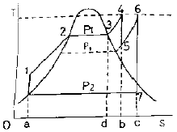
- 3 → 4
- 5 → 6
- 2 → 3
- 7 → 1
(정답률: 88%)
4. 물 120 kg을 20℃에서 80℃까지 가열하는데 필요한 열량은? (단, 물의 비열은 4.2kJ/kg℃ 이다.)
- 252 kJ
- 3600 kJ
- 7200 kJ
- 30240 kJ
(정답률: 65%)
5. 급수의 비탄산염 경도가 크고 보일러 내처리를 행하지 않거나 행하여도 pH조정제의 투입이 불충분하여 보일러수의 pH가 상승되지 않는 경우에 주로 생성되는 스케일의 종류는?
- 황산칼슘
- 규산칼슘
- 탄산칼슘
- 염화칼슘
(정답률: 66%)
6. 보일러 연소실 내 미연가스의 폭발을 대비하여 설치하는 안전장치는?
- 방폭문
- 안전밸브
- 가용전
- 화염검출기
(정답률: 86%)
7. 탄소(C) 20kg을 완전히 연소시키는 데 요구되는 이론공기량은 약 몇 Nm3인가?
- 178
- 155
- 47
- 37
(정답률: 55%)
8. 음속에 대한 설명으로 옳은 것은?
- 분자량이 클수록 음속은 증가한다.
- 기체상수가 클수록 음속은 증가한다.
- 압력이 높을수록 음속은 감소한다.
- 온도가 낮을수록 음속은 증가한다.
(정답률: 75%)
9. 습증기 영역에 대한 표현 중 옳은 것은? (단, x는 건도이다.)
- x = 0
- 0＜ x ＜ 1
- x = 1
- x ＞ 1
(정답률: 86%)
10. 계 내에 이상기체(기체상수 : 0.35kJ/kgㆍK, 정압비열 : 0.75kJ/kgㆍK)가 초기상태 75kPa, 50℃인 조건에서 5kg이 들어 있다. 이 기체를 일정 압력 하에서 부피가 2배가 될 때까지 팽창시킨 다음, 일정 부피에서 압력이 2배가 될 때까지 가열하였다면 전 과정에서 이 기체에 전달된 전열량은?
- 565kJ
- 1210kJ
- 1290kJ
- 2503kJ
(정답률: 38%)
11. 기체연료와 그 제조방법에 대한 설명 중 옳은 것은?
- 액화천연가스 : 석유정제과정에서 생성되는 프로판ㆍ부탄을 주체로 하는 가스를 압축 액화한다.
- 액화석유가스 : 석유의 경질유분을 ICI식, CRG식, 사이클링식 등의 개질장치로 분해한다.
- 나프타분해가스 : 알라스카 중동 등지에서 생산되는 가스를 그대로 액화시킨다.
- 대체천연가스 : 납사 등을 특수조건하에서 분해하여 천연가스와 동등한 특성을 가진 가스로 제조한다.
(정답률: 76%)
12. 기체연료 연소장치인 가스버너의 특징에 대한 설명으로 틀린 것은?
- 연소 성능이 좋고 고부하 연소가 가능하다.
- 연소조절이 용이하며 속도가 빠르다.
- 연소의 조절범위가 좁고 보수가 어렵다.
- 매연이 적어 공해 대책에 유리하다.
(정답률: 88%)
13. 25℃, 1기압에서 10L의 산소를 100L까지 등은 팽창시킬 경우, 단위 질량당 엔트로피 변화는? (단, 기체상수 R = 0.26 kJ/kg ㆍK 이다.)
- 0.2kJ/kg ㆍK
- 0.6kJ/kg ㆍK
- 23.4kJ/kg ㆍK
- 90.8kJ/kg ㆍK
(정답률: 48%)
14. 배기가스의 회전운동으로 원심력에 의하여 매진(煤塵)을 분리하는 장치는?
- 전기집진장치
- 사이클론집진장치
- 세정집진장치
- 여과집진장치
(정답률: 91%)
15. 석탄의 공업분석 시 필수적으로 측정하는 항이 아닌 것은?
- 수분
- 황분
- 휘발분
- 회분
(정답률: 65%)
16. 기체연료를 1m3씩 완전연소시켰을 때 연소가스가 가장 많이 발생하는 것은?
- 일산화탄소
- 프로판
- 수소
- 부탄
(정답률: 63%)
17. 기체연료의 특징에 대한 설명으로 틀린 것은?
- 화염온도의 상승이 비교적 용이하다.
- 연소장치의 온도 및 온도분포의 조절이 어렵다.
- 다량으로 사용하는 경우 수송 및 저장 등이 불편하다.
- 연소 후에 유해성분의 잔류가 거의 없다.
(정답률: 78%)
18. 0.4kmol의 CO2가 온도 150℃, 압력 80kP a일 때의 체적은? (단, 기체상수
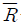
은 8.314 kJ/kmolㆍK이다.)- 2.7m3
- 17.5m3
- 20.7m3
- 30.5m3
(정답률: 62%)
19. 과열증기에 대한 설명으로 옳은 것은?
- 건포화증기를 가열하여 압력과 온도를 상승시킨 증기이다.
- 건포화증기를 온도의 변동 없이 압력을 상승시킨 증기이다.
- 건포화증기를 압축하여 온도와 압력을 상승시킨 증기이다.
- 건포화증기를 가열하여 압력의 변동 없이 온도를 상승시킨 증기이다.
(정답률: 79%)
20. 작동 유체에 상(phase)의 변화가 있는 사이클은?
- 랭킨사이클
- 오토사이클
- 스터링사이클
- 브레이튼사이클
(정답률: 80%)
2과목: 계측 및 에너지진단
21. 아래 자동제어계에 대한 블록선도로부터 ⓐ, ⓑ, ⓒ를 옳게 표기한 것은?
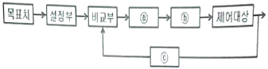
- ⓐ : 조작부, ⓑ : 조절부, ⓒ : 검출부
- ⓐ : 조절부, ⓑ : 조작부, ⓒ : 검출부
- ⓐ : 조절부, ⓑ : 검출부, ⓒ : 조작부
- ⓐ : 조작부, ⓑ : 검출부, ⓒ : 조절부
(정답률: 76%)
22. 다음 중 접촉식 온도계가 아닌 것은?
- 바이메탈온도계
- 백금저항온도계
- 열전대온도계
- 광고온계
(정답률: 87%)
23. 보일러 열정산에서 출열 항목에 속하는 것은?
- 연료의 현열
- 연소용 공기의 현열
- 노내 분입 증기의 보유열량
- 미연분에 의한 손실열
(정답률: 81%)
24. 저항온도계의 종류가 아닌 것은?
- 서미스터 온도계
- 백금 저항온도계
- 니켈 저항온도계
- CA 저항온도계
(정답률: 70%)
25. 제어계의 동작을 위한 기구요소에 대한 설명으로 틀린 것은?
- 스프링(spring) : 노즐의 변위를 압력으로 변화시킨다.
- 파일럿 밸브(pilot valve) : 변위량을 증폭시키는데 이용된다.
- 벨로즈(bellows) : 일종의 주름통이며 단독보다는 스프링과 조합하여 사용하며 압력제한기나 압력조절기 등이 이에 속한다.
- 다이어프램(diaphragm) : 얇은 박판으로서 외압의 변화로 격막판이 팽창이나 수축을 하면서 압력변화를 위치변화로 전환한다.
(정답률: 73%)
26. 여러 성분의 가스를 분석할 수 있으며 분리성능이 매우 좋고 선택성이 뛰어나 기체 및 비점 300 ℃ 이하의 액체시료 분석에 사용되는 분석기는?
- 오르자트 분석기
- 적외선 가스분석기
- 가스크로마토그래피
- 도전율식 가스분석기
(정답률: 73%)
27. 접촉식 온도계로서 내화물의 내화도 측정에 주로 사용되는 온도계는?
- 제게르콘(segercone)
- 백금저항온도계
- 기체식압력온도계
- 백금-백금ㆍ로듐 열전대온도계
(정답률: 86%)
28. 자동제어의 특징으로 가장 거리가 먼 것은?
- 생산성이 향상되어 원가 절감이 가능하다.
- 제품의 균일화 등 품질향상을 기대할 수 있다.
- 사람이 할 수 없는 곤란한 작업도 가능하다.
- 자동화에 의한 안전성 저해와 인건비 증가를 수반한다.
(정답률: 93%)
29. 상당증발량에 대한 정의로 옳은 것은?
- 보일러 발생열량을 이용하여 표준대기압하에서 100℃의 포화증기를 100℃의 포화수로 만들 수 있는 증기량을 말한다.
- 보일러 발생열량을 이용하여 표준대기압하에서 80℃의 환수를 100℃의 포화증기로 만들 수 있는 증기량을 말한다.
- 보일러 발생열량을 이용하여 표준대기압하에서 100℃의 포화수를 100℃의 포화증기로 만들 수 있는 증기량을 말한다.
- 보일러 발생열량을 이용하여 표준대기압하에서 0℃의 물을 100℃의 포화증기로 만들 수 있는 증기량을 말한다.
(정답률: 77%)
30. 유체의 정의에 대한 설명으로 틀린 것은?
- 유체는 그것을 담은 용기에 따라 형상이 달라진다.
- 유체는 정지 상태에 있을 때에는 전단력을 받지 않는다.
- 유체는 분자상호간의 거리와 운동범위가 고체보다 작다.
- 아무리 작은 전단력을 받더라도 저항하지 못하고 연속적으로 변형 한다.
(정답률: 79%)
31. 다음 그림은 증기압력 제어에서 병렬제어 방식의 구성을 표시한 것이다. ( )에 적당한 용어는?
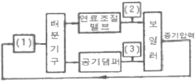
- 1 : 압력조절기, 2 : 목표치, 3 : 제어량
- 1 : 조작량, 2 : 설정신호, 3 : 공기량
- 1 : 압력조절기, 2 : 연료공급량, 3 : 공기량
- 1 : 연료공급량, 2 : 공기량, 3 : 압력조절기
(정답률: 87%)
32. 아래 그림과 같은 피드백(Feed-back)제어계의 등가 합성전달 함수는?
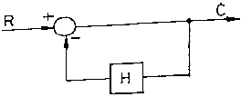
- H/1
- 1+H
- H
- 1/1+H
(정답률: 79%)
33. 펌프로 물을 양수할 때, 흡입관의 압력이 진공 압력계로 50 mmHg일 때, 절대 압력은? (단, 대기압은 750mmHg 으로 가정한다.)
- 1.13MPa
- 0.09MPa
- 0.03MPa
- 0.01MPa
(정답률: 60%)
34. 동일 측정 조건하에서 어떤 일정한 영향을 주는 원인에 의하여 생기는 오차를 무슨 오차라고 하는 가?
- 우연오차
- 계통오차
- 과실오차
- 필연오차
(정답률: 75%)
35. 미세한 압력 측정용으로 가장 적절한 압력계는?
- 브르돈관식
- 벨로즈식
- 경사관식
- 분동식
(정답률: 65%)
36. 부르돈관식 압력계에서 브르돈관의 재료로 가장 거리가 먼 것은?
- 납
- 인청동
- 스테인리스강
- 황동
(정답률: 74%)
37. 국제단위계(SI)의 유도단위계에 속하는 것은?
- 미터(m)
- 켈빈(K)
- 칸델라(cd)
- 라디안(rad)
(정답률: 74%)
38. 보일러 수위 제어용으로 액면에서 부자가 상하로 움직이며 수위를 측정하는 방식은?
- 직관식
- 플로트식
- 압력식
- 방사선식
(정답률: 91%)
39. 보일러에서 3요소식 수위제어장치의 검출 대상은?
- 수위, 급수량, 증기량
- 수위, 급수량, 연소량
- 급수량, 연소량, 증기량
- 급수량, 증기량, 공기량
(정답률: 73%)
40. 초음파 유량계의 원리는 무엇을 응용한 것인가?
- 제백 효과
- 도플러 효과
- 바이메탈 효과
- 펠티에 효과
(정답률: 80%)
3과목: 열설비구조 및 시공
41. 다음 중 가마 내의 부력을 계산하는 식은? (단, 가스의 밀도(kg/m3) : p, 가마의 높이(m) : H, 외기의 온도(K) : To, 가스의 평균 온도(K) : Tc이다.)
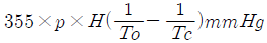
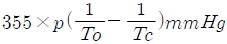
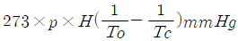
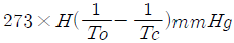
(정답률: 71%)
42. 내화물이 구비하여야 할 물리적, 화학적 성질이 아닌 것은?
- 팽창 또는 수축이 적을 것
- 사용온도에서 연화 또는 변화하지 않을 것
- 온도의 급격한 변화에 의한 파손이 적을 것
- 상온에서는 압축강도가 작아도 좋으나 사용온도에서는 커야 함
(정답률: 86%)
43. 아래 벽체구조의 열관류율(kcal/hㆍm2ㆍ℃) 값은? (단, 이때 내측 열저항 값은 0.⑤m2ㆍhㆍ℃/kcal, 외측 열저항 값은 0.13m2ㆍhㆍ℃/kcal 이다.)
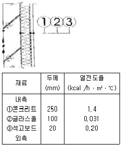
- 0.27
- 0.37
- 0.47
- 0.57
(정답률: 52%)
44. 벽돌을 1⑤℃~120℃사이에서 건조시킨 무게를 W, 이것을 물속에서 3시간 끓인 후 물속에서 유지시킨 무게를 W1, 물속에서 꺼내어 표면 수분을 닦은 무게를 W2라고 할 때 겉보기 비중을 구하는 식은?
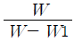
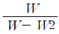
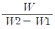
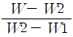
(정답률: 60%)
45. 층류와 난류의 유동상태 판단의 척도가 되는 무차원수는?
- 마하수
- 프란틀수
- 넛셀수
- 레이놀즈수
(정답률: 82%)
46. 입형 보일러의 특징에 대한 설명으로 틀린 것은?
- 내분식 보일러이다.
- 설치면적을 작게 할 수 있다.
- 대용량, 고압용으로 사용된다.
- 내부청소 및 검사가 곤란하다.
(정답률: 75%)
47. 배관의 이음법 중 폴리에틸렌관의 이음법에 해당하지 않는 것은?
- 융착 슬리브 이음
- 테이퍼 조인트 이음
- 인서트 이음
- 콤포 이음
(정답률: 70%)
48. 보일러 설비에 관한 설명으로 틀린 것은?
- 보일러 본체는 온수 또는 증기를 발생시키는 부분이다.
- 절탄기, 공기예열기 등은 보일러 열효율 증대장치이다.
- 연소열을 보일러수에 전달하는 면을 전열면이라 한다.
- 관 속에 물이 흐르고 외부의 연소가스에 의해 가열되는 관은 연관이다.
(정답률: 79%)
49. 열역학적 트랩의 종류로 옳은 것은?
- 디스크 트랩
- 플로트 트랩
- 버킷 트랩
- 바이메탈 트랩
(정답률: 74%)
50. 다음 중 산성내화물이 아닌 것은?
- 샤모트질 내화물
- 반규석질 내화물
- 돌로마이트질 내화물
- 납석질 내화물
(정답률: 67%)
51. 머플(Muffle)로에 대한 설명 중 틀린 것은?
- 간접 가열로이다.
- 열원은 주로 가스가 사용된다.
- 로 내는 높은 진공분위기가 된다.
- 소형품의 담금질과 뜨임가열에 이용된다.
(정답률: 69%)
52. 탄산마그네슘 보온재에 관한 설명으로 틀린 것은?
- 물 반죽을 하여 사용한다.
- 안전사용 온도는 약 250℃ 이하이다.
- 석면 85%, 탄산마그네슘 15%를 배합한 것이다.
- 방습 가공한 것은 습기가 많은 곳의 옥외 배관에 적합하다.
(정답률: 74%)
53. 증기의 압력에너지를 이용하여 피스톤을 작동시켜 급수를 행하는 비동력 펌프는?
- 볼류트펌프
- 터빈펌프
- 워싱턴펌프
- 프로펠러펌프
(정답률: 78%)
54. 착화를 원활하게 하는 보염기(stabilizer)의 종류가 아닌 것은?
- 축류식 선회기
- 반경류식 선회기
- 대류식 선회기
- 혼류식 선회기
(정답률: 52%)
55. 보일러 분출장치의 설치 목적으로 가장 거리가 먼 것은?
- 보일러수의 농축을 방지한다.
- 전열면에 스케일 생성을 방지한다.
- 보일러의 저수위 운전을 방지한다.
- 프라이밍이나 포밍의 발생을 방지한다.
(정답률: 78%)
56. 연속식 요에서 터널요의 구성요소가 아닌 것은?
- 건조대
- 예열대
- 소성대
- 냉각대
(정답률: 75%)
57. 노통연관 보일러의 특징에 대한 설명으로 틀린 것은?
- 전열면적이 넓어서 노통보일러보다 효율이 좋다.
- 패키지형으로 설치공사의 시간과 비용을 절약할 수 있다.
- 노통에 의한 내분식이므로 열손실이 적다.
- 증발량이 많아 증기발생 소요시간이 길다.
(정답률: 68%)
58. 노통 보일러에서 노통에 직각으로 설치한 것으로 전열면적을 증가시키고 물의 순환도 좋게 하며, 노통을 보강하는 역할도 하는 것은?
- 파형노통
- 아담스 조인트(Adamson joint)
- 갤로웨이관(galloway tube)
- 거싯 스테이(gusset stay)
(정답률: 82%)
59. 플레어 접합은 일반적으로 관경 몇 mm 이하의 동관에 대하여 적용하는가?
- 10mm
- 20mm
- 30mm
- 40mm
(정답률: 73%)
60. 인젝터의 특징에 관한 설명으로 틀린 것은?
- 구조가 간단하고 소형이다.
- 별도의 소요 동력이 필요하다.
- 설치장소를 적게 차지한다.
- 시동과 정지가 용이하다.
(정답률: 85%)
4과목: 열설비취급 및 안전관리
61. 부식의 종류 중 균열을 동반하는 부식에 속하는 것은?
- 점식
- 틈새부식
- 수소취화
- 탈성분부식
(정답률: 73%)
62. 보일러의 외부 청소방법이 아닌 것은?
- 산세법
- 수세법
- 스팀 쇼킹법
- 워터 쇼킹법
(정답률: 81%)
63. 중유보일러의 연소가스 중 부식을 일으키는 성분은?
- 공기
- 황화수소
- 아황산가스
- 이산화탄소
(정답률: 70%)
64. 에너지이용 합리화법에서 정한 에너지관리자에 대한 교육기간은?
- 1일
- 2일
- 3일
- 5일
(정답률: 87%)
65. 에너지이용합리화법상 에너지의 이용효율을 높이기 위하여 관계행정기관의 장과 협의하여 건축물의 단위 면적당 에너지사용목표량을 정하여 고시하여야 하는 자는?
- 산업통상자원부장관
- 환경부장관
- 시ㆍ도지사
- 국무총리
(정답률: 73%)
66. 보일러 운전 중 연소장치 이상에 따른 소화현상의 발생 사고에 대한 원인으로 틀린 것은?
- 연소 장치의 기계적 고장의 경우
- 통풍장치의 고장으로 공기량이 부족한 경우
- 수분의 혼입이나 통풍에 의한 통풍교란의 경우
- 스트레이너가 막혀서 펌프흡입구에서 급유온도가 상승하여 압력이 갑자기 올라갈 경우
(정답률: 70%)
67. 에너지법에서 에너지공급자가 아닌 자는?
- 에너지 수입사업자
- 에너지 지정사업자
- 에너지 전환사업자
- 에너지사용시설의 소유자
(정답률: 87%)
68. 수질이 산성인지 알칼리성인지를 판단할 수 있는 값을 나타내는 기호는?
- °dH
- pH
- ppm
- ppb
(정답률: 89%)
69. 보일러 수처리에서 용해 고형물의 불순물을 처리하는 순환기 외처리 방법은?
- 여과
- 응집침전
- 전염탈염
- 침강분리
(정답률: 59%)
70. 보일러의 설계에 있어 고려해야 할 사항으로 틀린 것은?
- 보일러는 최대 사용량에 대하여 충분한 증발과 표면적을 갖도록 설계되어야 하며 모든 관군에서 순환이 잘 되어야 한다.
- 보일러와 부속기기는 운전 및 보수, 청소 등이 용이하게 설계되어야 하며 수시 점검을 위한 검사구 및 맨홀 등을 갖추어야 한다.
- 보일러 노벽은 서냉이 되도록 하고 연소실은 완전 연소가 이루어지도록 충분한 체적이 되게 한다.
- 연소실은 공기가 잘 통하도록 하여야 하며 물청소를 할 수 없는 구조로 설계한다.
(정답률: 91%)
71. 보일러 운전 중 역화방지 대책에 대한 설명으로 옳은 것은?
- 점화 시 착화는 천천히 한다.
- 노 내에 연료를 우선 공급한 후 공기를 공급한다.
- 점화 시 댐퍼를 닫고 미연소가스를 배출시킨 뒤 점화한다.
- 실화 시 재점화 할 때는 노 내는 충분히 환기시킨 후 점화한다.
(정답률: 65%)
72. 산업통상자원부장관은 에너지이용 합리화를 위하여 에너지를 소비하는 에너지사용기자재 중 산업통상자원부령이 정하는 기자재에 대하여 고시할 수 있는 사항이 아닌 것은?
- 에너지의 소비효율 또는 사용량의 표시
- 에너지의 소비효율 등급기준 및 등급표시
- 에너지의 소비효율 또는 생산량의 측정방법
- 에너지의 최저소비효율 또는 최대 사용량의 기준
(정답률: 83%)
73. 에너지법에서 사용하는 용어에 대한 설명으로 틀린 것은?
- “에너지”란 연료ㆍ열 및 전기를 말한다.
- “에너지사용자”란 에너지시설의 판매자 또는 공급자를 말한다.
- “에너지사용기자재”란 열사용기자재나 그 밖에 에너지를 사용하는 기자재를 말한다.
- “에너지사용시설”이란 에너지를 사용하는 공장ㆍ사업장 등의 시설이나 에너지를 전환하여 사용하는 시설을 말한다.
(정답률: 77%)
74. 에너지이용합리화법에 따라 국가ㆍ지방자치단체 등이 추진하여야하는 에너지의 효율적 이용과 온실가스의 배출 저감을 위하여 필요한 조치의 구체적인 내용은 무엇으로 정하는가?
- 산업통상자원부령
- 고용노동부령
- 대통령령
- 환경부령
(정답률: 72%)
75. 백색분말로 흡습성은 없으나, 승화와 강의 부식 억제성을 가지고 있는 약품은?
- 생석회
- VCI(Volatile Corrosion Inhibitor)
- 실리카겔
- 활성알루미나
(정답률: 72%)
76. 증기의 건도(x)가 '0' 이면 무엇을 말하는가?
- 포화수
- 습증기
- 과열증기
- 건포화증기
(정답률: 74%)
77. 보일러 급수 중의 불순물이 용해되어 전열면벽에 고착하지 않고 동체 저부(低部)에 침전되는 것은?
- 스케일
- 부유물
- 슬러지
- 슬래그
(정답률: 77%)
78. 신설 보일러의 소다끓이기(soda boiling) 작업 시 사용할 수 있는 약품으로 가장 거리가 먼 것은?
- 염화나트륨
- 탄산나트륨
- 수산화나트륨
- 제3인산나트륨
(정답률: 59%)
79. 보일러의 정상 정지 시 유의사항으로 틀린 것은?
- 남은 열로 인한 증기 압력 상승을 확인한다.
- 노벽 및 전열면의 급랭을 방지할 수 있는 조치를 한다.
- 작업종료 시까지 필요한 증기를 남겨놓고 운전을 정지한다.
- 상용수위보다 낮게 급수한 후 드레인 밸브를 연다.
(정답률: 76%)
80. 증발관과 같이 열 부하가 높은 관의 집중과열점 부근에서 수산화나트륨의 농도가 대단히 높아져 pH의 상승으로 부식이 심하게 일어나는 것을 무엇에 의한 부식이라고 하는가?
- 알칼리에 의한 부식
- 염화마그네슘에 의한 부식
- 증기분해에 의한 부식
- 산세척에 의한 부식
(정답률: 82%)